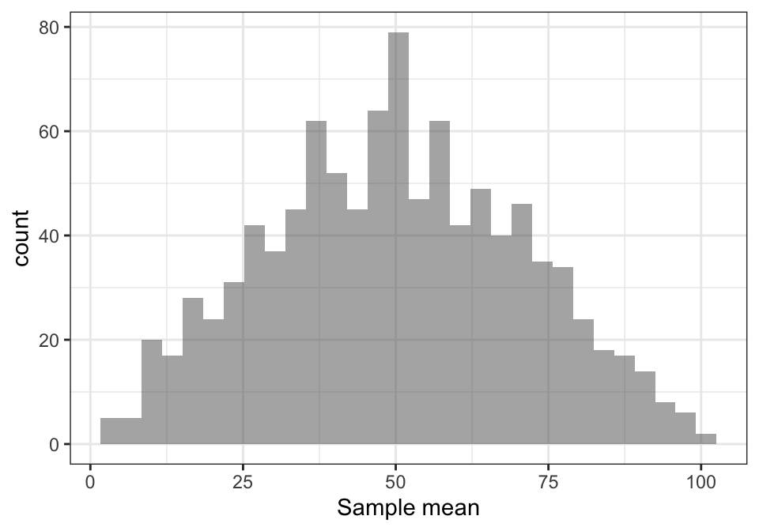

The Central Limit Theorem
The Central Limit Theorem (CTL) is the base of inferential statistics. Differently from the [law of large numbers], it is less intuitive and it requires a little more technicalities.
The CTL represents a remarkable result because it implies that, no matter what the population distribution looks like, as the sample size gets larger the distribution of the sample mean approaches a normal distribution. Knowing what the ditribution looks like is important because once we know it, we can calculate the probability of observing a specific range of values that the sample mean may take.
First of all, note that the sample mean is a sum of random variables divided by a constant, that is the sample size n:
\[ \bar{X} = \frac{1}{n}\sum_{i=1}^n X_i \]
The randomness attributed to the sample mean is due to the fact that each \(X_i\) is a random variable. This means that the value that we observe on each draw \(i\) is random. In other words, in each sample we will have different observed values for each \(X_i\).
Now, theoretically, the distribution of the sample mean \(\bar{X}\) depends on the distribution of \(X_i\). But often, you may not even know what the distribution of \(X_i\) looks like!
Luckily, the CLT makes life easier. In fact, the CLT says that if the sample size is large enough (usually at least 30), the distribution of the sample mean approaches a normal distribution, no matter what the distribution of the original data looks like.
Note that this does not mean that if you take a large enough sample, the distribution of that sample itself is a normal variable! It means that the sample mean, that in your case is a specific observed value, is a realisation of a normal variable. If you take another sample and calculate another sample mean, and then another and another, etc etc, than you have a lot sample means, and you will see that the distribution of those looks like a normal distribution!
Example with R
Let us see an example. We will start by simulating the distribution of the sample mean with a small sample size, and we will make it larger and larger.
Suppose we take a sample of size \(n=2\) of numbers from 1 to 100, and calculate the mean:
n <- 2
x <- sample(1:100, n, replace = TRUE)
mean_x <- mean(x)Now mean_x is just a one value, but we know it is a realisation of a random variable. In order to simulate its distribution, we will make the same routine, \(r=1000\) times.
require(dplyr)
require(ggplot2)
r <- 1000
x <- replicate(r, sample(1:100, n, replace = TRUE))
mean_x <- apply(x, 2, mean)
mean_x <- data.frame(sample_mean = mean_x)
ggplot(mean_x) +
geom_histogram(aes(x = sample_mean), alpha = 0.5) +
xlab("Sample mean") +
theme_bw()
The distribution is fairly simmetrical, however it is far from being gaussian. Let us try what happens with \(n=5, 10, 30, 50\) draws:
mean_x <- data.frame(sample_size = c(), sample_mean = c())
n <- c(5, 10, 30, 50)
for (i in 1:length(n)) {
r <- 1000
x <- replicate(r, sample(1:100, n[i], replace = TRUE))
mean_x <- bind_rows(mean_x,
data.frame(sample_size = rep(n[i], r),
sample_mean = apply(x, 2, mean)))
}
ggplot(mean_x %>%
mutate(sample_size = factor(sample_size, levels = c(5, 10, 30, 50)))) +
geom_histogram(aes(x = sample_mean, fill = sample_size, col = sample_size), alpha = 0.5) +
xlab("Sample mean") +
facet_wrap(~ sample_size) +
theme_bw()
This article was written by Emanuela Furfaro.